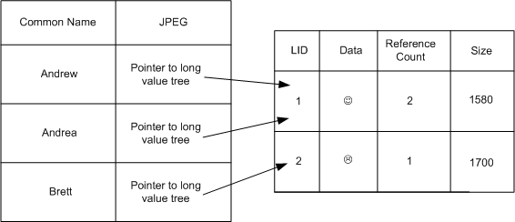

Applies to: Windows | Windows Server
The ESE column types JET_coltypLongText and JET_coltypLongBinary are called long value column types. These columns are large string and large binary objects that may be stored in separate B+ trees away from the primary index. When long values are stored separate from the primary record, they are internally keyed on a long value ID (LID) and byte offset and accessed as a stream. Long value columns are added to the table in the call to JetAddColumn with the coltyp member of the JET_COLUMNDEF structure set to either JET_coltypLongText or JET_coltypLongBinary. The maximum size of a Long Text or Long Binary column value is 2 GB -1.
ESE supports append, byte range overwrite, and set size operations for long value columns to support efficient stream implementations on these column types. By default, long value data is stored in a separate B+ tree if it is larger than 1024 bytes, or if the record does not fit on a single database page when the long value data is stored in the record. The application has the option to override the default behavior by setting options to store long value data in the record (JET_bitSetIntrinsicLV) or to force them to be stored in the separate B+ tree (JET_bitSetSeparateLV). These values are set in the grbit parameter in JetSetColumn, or the grbit member JET_SETCOLUMN used in the call to JetSetColumns as follows:
Append: (JET_bitSetAppendLV)
Byte Range Overwrite: (JET_bitSetOverwriteLV)
Set Size: (JET_bitSetSizeLV)
Force Separate: (JET_bitSetSeparateLV)
Store In Record: (JET_bitSetIntrinsicLV)
The long value data is set by indicating the offset into the long value blob, and the length of the long value data in the blob. The offset to the long value blob is set in the ibLongValue member of JET_SETINFO structure (for JetSetColumn) or the ibLongValue member of the JET_SETCOLUMN structure (for JetSetColumns). The pvData member of JET_SETCOLUMN, and pvData parameter in the call to JetSetColumn contains the long value data. Updates to long value columns must be performed inside a transaction.
The long value data is always stored in a separate table is when the application sets the JET_bitSetSeparateLV or JET_bitSetIntrinsicLV, otherwise it is heuristically decided. ESE stores the long value separated if it is larger than 1024 bytes or if the record would not fit on a single database page if stored in record.
The following diagram shows the long value data stored in separate table. When a long value is stored outside the record, a new long valued ID is created to refer to its value. This allows multiple records to refer to the same column value. Reference counts to the data are increased if more than one record in the data points to the same long value data.

ESE also supports a single instance store feature that allows multiple records to reference the same large binary object as though each record had its own copy of the information; thus avoiding duplicate copies of the column value data. This feature is enabled in the call to JetPrepareUpdate with the JET_prepInsertCopy option set in the prep parameter.